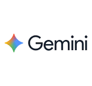
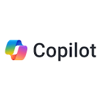

|
 |
 |
| ChatGPT | Google Gemini | Microsoft Copilot |
| https://chatgpt.com/ | https://gemini.google.com/ | https://copilot.microsoft.com/ |
| Asistente de inteligencia artificial de OpenAI para conversar, redactar, estudiar, planificar, programar, resolver problemas y analizar imágenes o archivos. Está diseñado para seguir instrucciones dentro de una conversación. | Asistente de inteligencia artificial de Google que ayuda a escribir, aprender, planificar, resumir información, generar ideas y trabajar con distintos tipos de contenido. Se integra con el ecosistema de Google. | Asistente digital con inteligencia artificial de Microsoft. Puede responder preguntas, resumir información, apoyar la escritura, generar imágenes y ayudar en tareas cotidianas; además, cuenta con integración en varios productos de Microsoft. |
| Modelos que maneja: GPT-5.3, GPT-5.3 Thinking y GPT-5.5 Pro | Modelos que maneja: Gemini Flash / Gemini Pro / Gemini Nano | Modelos que maneja: OpenAI, Anthropic y Microsoft |
¿Deseas más información?